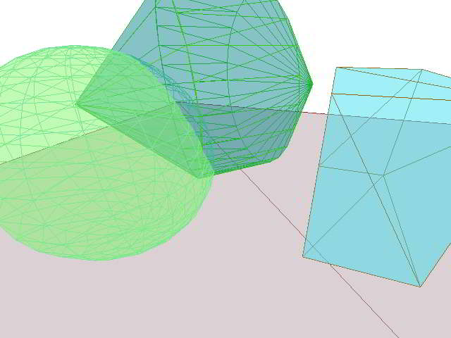
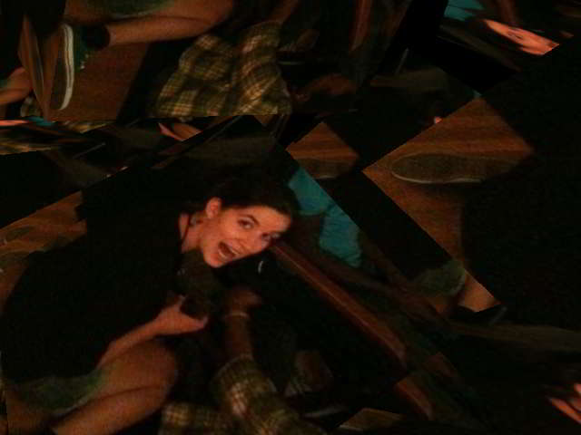

Home > Sample and Demo Files for Three.js
Standing on the shoulders of Mr.doob...
Three.js is a 3D framework built with JavaScript working over WebGL that offers to people with small brains, such as myself, the possibility to program and generate quite sophisticated and complex three dimensional content. The three.js framework is developed and maintained by Mr.doob with additions by a number of other contributors including AlteredQualia. Nooshu maintains and update a catalog of latest three.js developments on Reddit.
Sample Animations
Sphere of Random Geometry
First posted: 2016-01-25
Threesentation
First posted: 2012-04-17
Animated Peeps Tutor
First posted: 2012-04-28
Animated Peeps
First posted: 2012-04-02
Text Demo
First posted: 2012-03-13
The Long Walk
First posted: 2012-03-13
Sample, "Hello World" & Issues Code
Coding Samples

screen capture of 4 Primitives example.
The Coding Samples files are intended to help you learn how to write code for Three.js. Each file provides the simplest and minimum possible code needed to carry out a single intended result. The goal is to get the information as to how to create or do a particular task into your brain in the shortest possible time.
Hello World Sample Programs
As Wikipedia puts it.
A "Hello World" program is a computer program which prints out "Hello World" on a display device. It is used in many introductory tutorials for teaching a programming language. Such a program is typically one of the simplest programs possible in most computer languages. It is often considered to be tradition among programmers for people attempting to learn a new programming language to write a "Hello World!" program as one of the first steps of learning that particular language
Hello World programs can not only help you learn a new language, but they can also be used for default, template or boilerplate programs. I have prepared several Hello World programs intended to be used for both purposes.
Special Bonus: Included among the files is perhaps the shortest possible three.js applet ever written!
Issues Sample Programs
With any program under such rapid development as Three.js, there are bound to be issues that are as yet unresolved. If the bugs reports are to be closed then it really helps the prorammers if there are sample files that can be used to identify errors.
Three.js Demos
The Three.js Demos are files intended to show off cool things you can do with Three.js. Each file provides a demo. The goal is to get you to think "Wow, I 've come to the right place. This is just what I need!" (or to think the opposite as the case may be) in the shortest time.
The current demos involve wrapping images around swirling cubes. The images are of my second daughter and three of her drawings.
Cynthia and her Drawings

screen capture of Cynthia Herself demo.
Cube Demos

screen capture of 1000 Cubes demo.
Updates
2011-02-02: Hello World, Issues and Cube Demos folders and files added. This page edited and enhanced with additional text, links and images.
Notes
All the files are built on top of three.js which is a lightweight 3D engine working over WebGL that is "with a very low level of abstraction (aka for dummies)". All I can say is "Works for me!"
Because of their tightness these files do not contain a warning that you need a browser that supports WebGL. Currently Internet Explorer does not support WebGL. Best to use Google Chrome or the beta versions of FireFox 4 and Safari 10.6 .
2011-01-23